ECCV 2026 Autoregressive video diffusion models
Test-Time Noise Guided Adaptation for Realistic Autoregressive Video Generation
TANGO — Terminal points Avoidance through Noise Guided Optimization
1 Information Technologies Institute, CERTH, Greece · 2 University of Amsterdam, The Netherlands
Autoregressive video diffusion models degrade over time for a reason deeper than frame-level drift: they reach terminal points — states inside the learned manifold of real videos from which no continuation exists without exiting it. Even a video whose every frame looks right can already be trapped.
The work introduces this issue, shows that it can be detected from the statistics of the model's own noise predictions, and provides TANGO — a test-time adaptation approach for steering autoregressive video diffusion models away from terminal points.
Problem
Realistic frames are not enough
Autoregressive video diffusion models generate arbitrarily long videos by conditioning only on their own past frames. Small mismatches between the sequences they generate and the sequences they saw during training accumulate, until the process collapses.
Recent work fights this drift by anchoring each generated frame to the learned manifold of real frames — through training-time unrolling, repeated denoising, or attention sinks. These approaches share an assumption: if every individual frame stays on-manifold, the video stays realistic.
This paper argues that the assumption breaks. Trained on a finite set of finite-length videos, the model can produce a trajectory whose every frame is realistic, yet which — as a sequence — has no valid continuation under what the model knows. Forced to continue anyway, generation exits the learned manifold of real videos and the video turns unrealistic.
Terminal point — a state inside the learned manifold of real videos from which no continuation exists without exiting it. Every frame up to this point looks fine; yet, the trajectory becomes out-of-distribution w.r.t. the learned model.
Method
The model can be its own critic
TANGO asks the model one question about its own predicted future: does the noise it predicts still look like the noise assumed during training? During training, the denoiser only ever removes isotropic Gaussian noise. When it is conditioned on an out-of-distribution sequence the assumed noise statistics can be violated.
Predict one step forward
Before committing to the next denoising, the frozen model predicts the noise residual a timestep after it, conditioned on the candidate continuation.
Check it against Gaussian statistics
For a well-modeled trajectory this look-ahead residual should be indistinguishable from isotropic Gaussian noise — in its moments, its symmetry, and its spectrum. Deviations flag a terminal point.
Optimize around the trap
A small set of adaptive parameters (LoRA) is optimized at test time to minimize the deviation, constrained to stay near the original prediction — finding an alternative trajectory the model can continue.
What exactly is measured in the noise?
Four complementary statistics of the look-ahead residual, each penalizing a deviation from what isotropic Gaussian noise would show:
ℒa First & second moments
The empirical mean should be 0 and the variance 1. Penalizes global shifts and scale drift in the residual.
ℒb Higher-order moments
Skewness and excess kurtosis of the z-scores should both be 0. Catches asymmetry and heavy tails — structural artifacts hiding in the residual.
ℒs Spectral flatness
Isotropic noise has equal energy at all frequencies. A non-flat power spectrum means the denoiser is removing actual visual content along with the noise.
ℒl Low-frequency moments
Real visual content concentrates in low frequencies, which the raw statistics — dominated by high frequencies — can miss. The same moment tests, applied to a low-pass filtered residual.
The total objective adds a constraint that keeps the corrected prediction in the neighborhood of the original one — without it, the optimization converges to trivial solutions and performs worse than no guidance at all:
𝒥(φ) = Eε∼𝒩(0,I) [ ℒ𝒩 ] + λreg ‖ x0i(φ) − x0i(θ) ‖22
Why does the predicted noise reveal terminal points?
The denoiser is trained to remove isotropic Gaussian noise — but only when conditioned on past sequences drawn from its training distribution. For any conditioning sequence outside that distribution, the training loss never constrained the model's output, so the prediction is free to violate the properties the forward noising process guarantees.
TANGO turns this blind spot into a detector. If the model, conditioned on a candidate continuation, predicts a residual that is not plausible Gaussian noise, the candidate has led outside what the model has learned — the definition of a terminal point. The paper derives this in the score-matching formulation; the supplementary material provides the flow-matching variant actually used in the implementation.
Results
Drift, measured
If terminal points are real, their cost should grow with video length — and avoiding them should keep the distribution of generated videos close to that of real ones over time. Fréchet Video Distance per 3-second segment, against real reference clips from LV-Bench, measures exactly that.
FVD by video segment — lower is better
Video-to-video continuation on LV-Bench; average over consecutive 3-second segments of 15-second videos.
Both start in the same place. By 15 seconds the baseline has drifted to nearly double its initial distance from real video (367.9 → 715.6); TANGO stays close to flat (365.1 → 438.8). Averaged over whole videos, FVD drops 28.3% (576.8 → 413.3).
Which loss terms matter? — full ablation
| Ablation (FVD ↓) | 1–3s | 4–6s | 7–9s | 10–12s | 13–15s | Total |
|---|---|---|---|---|---|---|
| TANGO (ours) | 365.1 | 408.8 | 412.7 | 441.4 | 438.8 | 413.3 |
| w/o ℒa (moments) | 364.6 | 418.1 | 467.1 | 469.8 | 488.2 | 441.6 |
| w/o ℒl (low-freq. moments) | 380.3 | 452.8 | 518.4 | 534.8 | 545.2 | 486.3 |
| w/o ℒs (spectral flatness) | 369.3 | 443.9 | 507.1 | 530.6 | 578.4 | 487.9 |
| w/o ℒb (higher-order moments) | 363.7 | 449.8 | 561.2 | 587.1 | 572.3 | 506.8 |
| w/o ℒreg (regularization) | 420.1 | 634.4 | 630.9 | 823.9 | 811.7 | 664.2 |
| w/o ℒ𝒩 (baseline) | 367.9 | 554.6 | 600.7 | 645.4 | 715.6 | 576.8 |
Higher-order moments contribute most; removing regularization is worse than no guidance at all — the constraint is what prevents trivial solutions. Best values highlighted in bold.
Hyperparameter sensitivity
| LoRA rank | FVD ↓ | B (noise vectors) | FVD ↓ | λreg | FVD ↓ |
|---|---|---|---|---|---|
| 2 | 596.2 | 1 | 473.7 | 0.1 | 656.5 |
| 4 | 496.3 | 5 | 461.8 | 0.5 | 449.3 |
| 8 | 413.3 | 10 | 413.3 | 0.9 | 413.3 |
| 16 | 425.6 | 20 | 399.4 | 10 | 475.6 |
Gains from more trainable parameters eventually diminish; more noise vectors keep helping but cost compute — B = 10 is the reported trade-off. The weights of the individual noise-consistency terms behave best when kept within the same order of magnitude. Best values highlighted in bold.
Results
Side by side, over time
The same drift is visible. Below, three 15-second text-to-video generations by the two strongest prior methods and TANGO, aligned on a shared timeline — drag the slider and watch what the evolution of the generated trajectory as time grows.
“…a person is driving car…”
“…a train and a boat…”
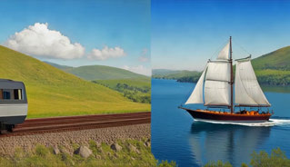
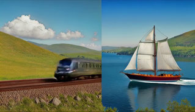
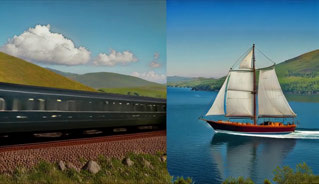
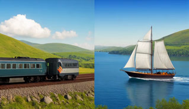
“…a bird flying over a snowy forest…”
Results
Against the state of the art
On VBench all methods initialized from the same Wan2.1-T2V-1.3B backbone and generating 15-second videos — TANGO scores best on 9 of the 16 metrics and on all three aggregate scores. The full table included:
| Approach | Aesthetic quality | Appear. style | Backgr. consist. | Color | Dynamic degree | Human action | Imaging quality | Motion smooth. | Multiple objects | Object class | Overall consist. | Scene | Spatial relation. | Subject consist. | Temporal flicker | Temporal style | Quality | Semantic | Total |
|---|---|---|---|---|---|---|---|---|---|---|---|---|---|---|---|---|---|---|---|
| RollingForcing | 0.658 | 0.205 | 0.957 | 0.819 | 0.403 | 0.940 | 0.712 | 0.986 | 0.932 | 0.935 | 0.269 | 0.563 | 0.747 | 0.958 | 0.991 | 0.241 | 0.802 | 0.814 | 0.804 |
| Self-Forcing | 0.644 | 0.206 | 0.942 | 0.848 | 0.611 | 0.950 | 0.696 | 0.985 | 0.896 | 0.959 | 0.271 | 0.578 | 0.768 | 0.928 | 0.989 | 0.249 | 0.832 | 0.808 | 0.827 |
| CausVid | 0.665 | 0.242 | 0.966 | 0.824 | 0.872 | 0.998 | 0.702 | 0.976 | 0.747 | 0.937 | 0.275 | 0.556 | 0.667 | 0.933 | 0.938 | 0.252 | 0.837 | 0.794 | 0.828 |
| RewardForcing | 0.650 | 0.205 | 0.954 | 0.896 | 0.625 | 0.980 | 0.687 | 0.984 | 0.845 | 0.940 | 0.269 | 0.539 | 0.830 | 0.932 | 0.986 | 0.244 | 0.835 | 0.804 | 0.829 |
| LongLive | 0.660 | 0.205 | 0.958 | 0.885 | 0.361 | 0.960 | 0.695 | 0.988 | 0.851 | 0.969 | 0.268 | 0.591 | 0.801 | 0.953 | 0.992 | 0.242 | 0.838 | 0.812 | 0.832 |
| TANGO (ours) | 0.690 | 0.257 | 0.962 | 0.850 | 0.769 | 0.960 | 0.727 | 0.985 | 0.937 | 0.972 | 0.283 | 0.603 | 0.859 | 0.945 | 0.989 | 0.275 | 0.864 | 0.860 | 0.863 |
Bold = best, underlined = second best, per column. TANGO does not win everywhere: subject consistency goes to RollingForcing, color to RewardForcing, and CausVid stays ahead on dynamic degree — at the cost of semantic coherence. Methods that anchor to early frames (LongLive, RollingForcing) score high on consistency but low on dynamic degree (0.361 / 0.403): staying realistic by barely moving. Yet, TANGO achieves greater consistency across all the measured aspects, and thus, a better overall score.
VBench total by video length
All 16 metrics, recomputed on 5, 10, and 15-second generations. Hover any point for its value.
Terminal points are not only a long-video problem. They can make even short trajectories out-of-distribution for the generative model. Thus, TANGO helps at every length.
Per-length semantic, quality and total scores — full table
| Approach | Sem. 5s | Sem. 10s | Sem. 15s | Qual. 5s | Qual. 10s | Qual. 15s | Total 5s | Total 10s | Total 15s |
|---|---|---|---|---|---|---|---|---|---|
| RollingForcing | 0.835 | 0.831 | 0.814 | 0.800 | 0.798 | 0.802 | 0.807 | 0.804 | 0.804 |
| Self-Forcing | 0.839 | 0.837 | 0.808 | 0.834 | 0.817 | 0.832 | 0.835 | 0.821 | 0.827 |
| CausVid | 0.813 | 0.809 | 0.794 | 0.842 | 0.831 | 0.837 | 0.836 | 0.827 | 0.828 |
| RewardForcing | 0.847 | 0.836 | 0.804 | 0.808 | 0.807 | 0.835 | 0.816 | 0.813 | 0.829 |
| LongLive | 0.829 | 0.825 | 0.812 | 0.816 | 0.813 | 0.838 | 0.819 | 0.815 | 0.832 |
| TANGO (ours) | 0.867 | 0.856 | 0.860 | 0.868 | 0.864 | 0.864 | 0.868 | 0.862 | 0.863 |
Efficiency
Test-time adaptation vs training-time scaling
Test-time adaptation buys quality with inference compute instead of parameters and training data. Steering a 1.3B model away from terminal points outperforms or matches in performance much larger models at a fraction of their runtime on the measured aspects.
Quality vs. runtime — circle area ∝ parameters
15 seconds of video on comparable hardware; hover any circle for details.
Runtime & memory — full table
| Model | Params | VBench ↑ | Runtime ↓ | Memory ↓ |
|---|---|---|---|---|
| Baseline (Self-Forcing) | 1.3B | 0.827 | 1.2 min | 23.4 GiB |
| HunyuanVideo | 13B | 0.832 | 92.3 min | 62.5 GiB |
| SVI-1.0 (Wan2.1) | 14B | 0.837 | 30.6 min | 37.9 GiB |
| SVI-2.0 (Wan2.1) | 14B | 0.849 | 39.8 min | 37.9 GiB |
| SVI-2.0-Pro (Wan2.2) | 27B | 0.869 | 43.2 min | 68.4 GiB |
| TANGO (ours) | 1.3B | 0.863 | 8.6 min | 37.6 GiB |
Gallery
One mechanism, three tasks
TANGO's correction does not rely on the initial condition — its objective reads only the noise the model predicts one step ahead. The identical procedure therefore runs unchanged for text-to-video, image-to-video, and video-to-video generation. Seven frames per sample, uniformly spanning 14 seconds — hover or drag to move through time.
A boat sailing leisurely along the Seine River with the Eiffel Tower in background by Hokusai, in the style of Ukiyo
Follows the prompt over the full span while the background stays accurate.
A space shuttle launching into orbit, with flames and smoke billowing out from the engines
The subject follows the prompt without turning unrealistic or static.
Vincent van Gogh is painting in the room
The subject moves into the scene and performs the action; partial occlusions do not disrupt it.
Sewing machine, old sewing machine working.
The moving parts are correctly identified; the rest of the scene remains intact.
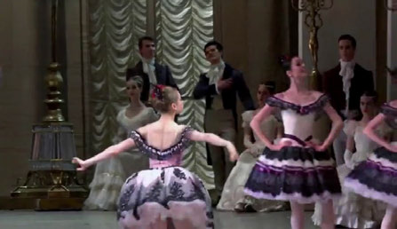
input image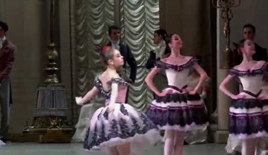
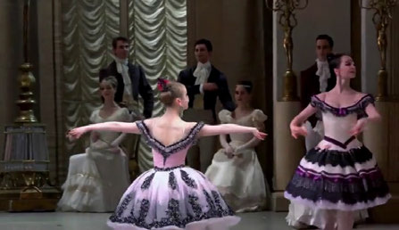
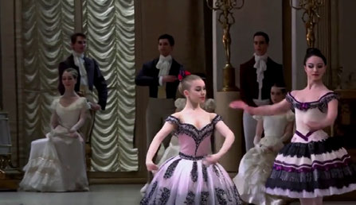
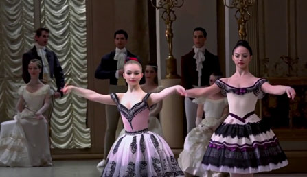
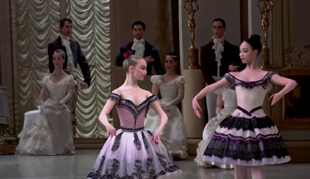
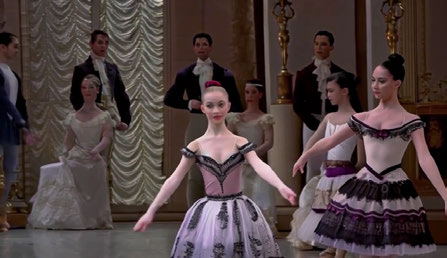
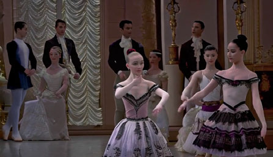
In the opulent setting of a grand ballroom adorned with golden drapes and classical decor, a group of ballet dancers in intricate costumes perform with poised elegance, their movements synchronized to the subtle, yet powerful, strains of classical music.
The environment is maintained while the dancers keep moving realistically.
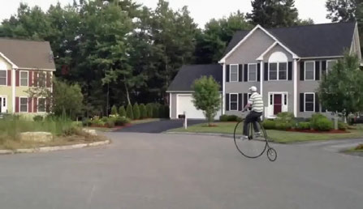
input image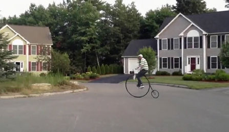
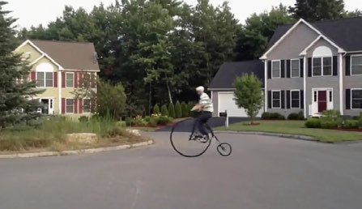
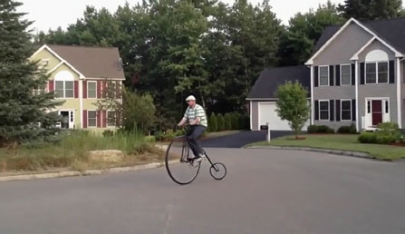
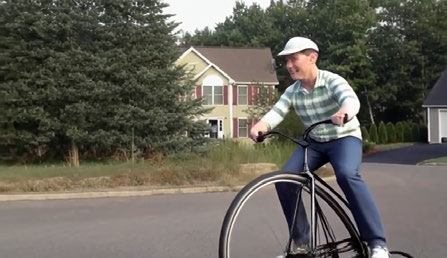
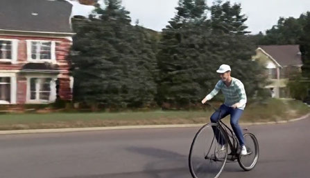
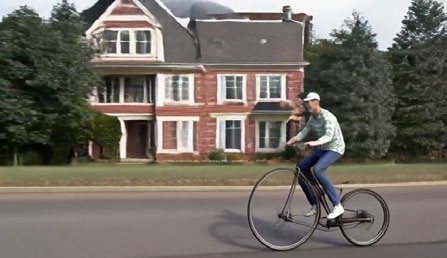
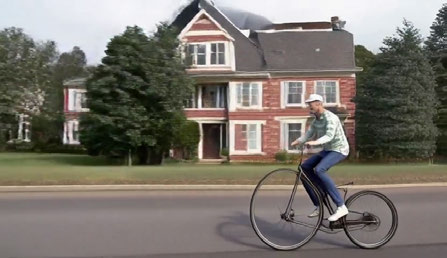
In the tranquil suburban setting, the frame captures a man animatedly riding an oversized vintage bicycle, known as a penny-farthing, in front of a two-story house with red and white trim.
The scene extends naturally; the subject stays consistent while moving.
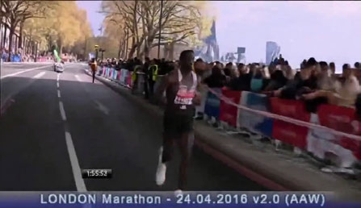
input image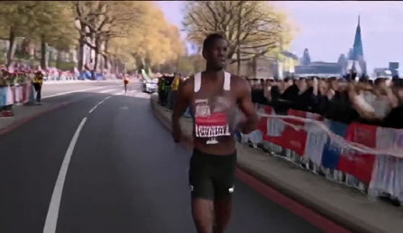
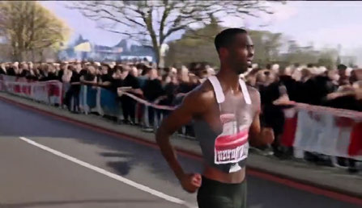
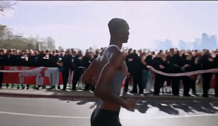
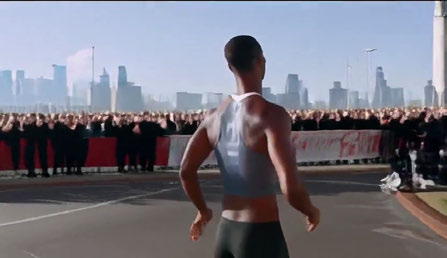
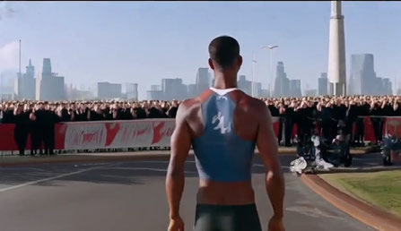
In the bustling heart of a sunlit marathon in London, the frame captures the intense focus and sheer determination of a male marathon runner as he leads the race.
Environment aesthetics stay realistic even after the initial view leaves the camera.
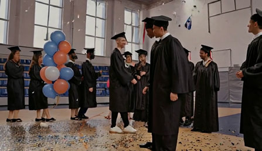
The scene takes place in a well-lit hall, possibly within an educational institution, suggested by the presence of individuals dressed in graduation gowns and caps.
People move naturally and the environment stays coherent.
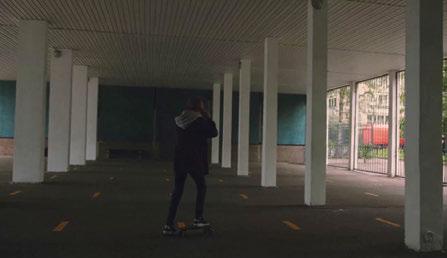
input video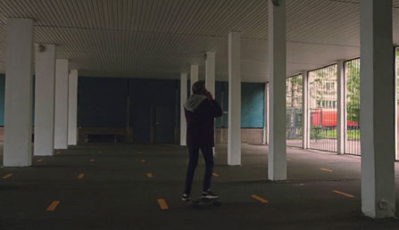
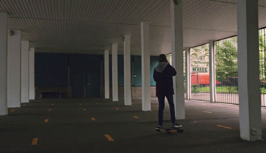
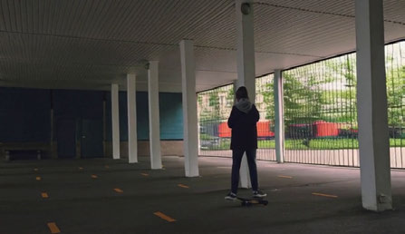
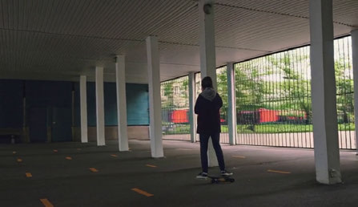
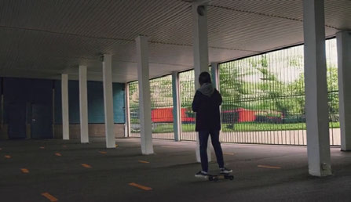
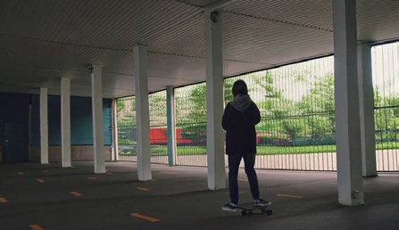
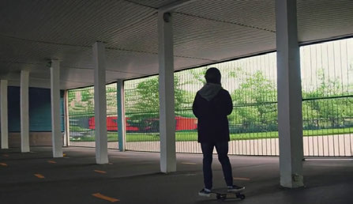
The video showcases a railway track environment on a bright day with partial cloud cover. Prominent features include multiple railway tracks running parallel, bordered by a platform on the right.
The initial view is extended naturally, preserving the scene's aesthetics.
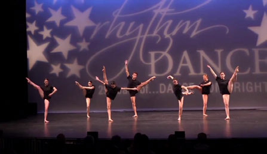
input video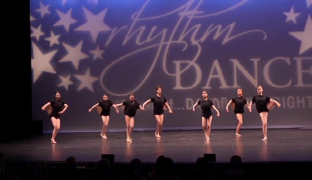
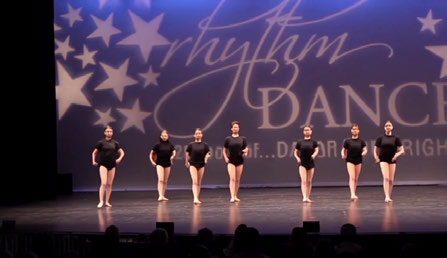
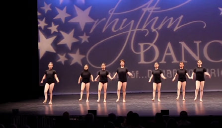
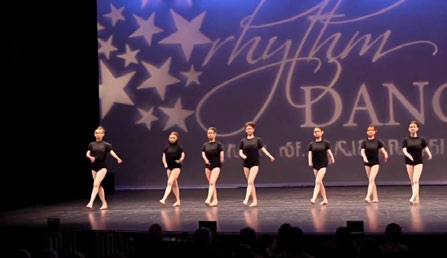
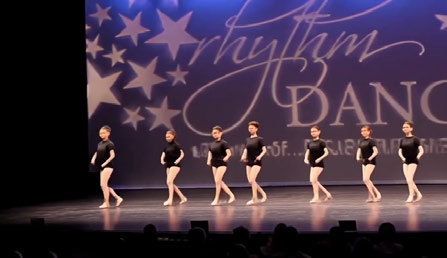
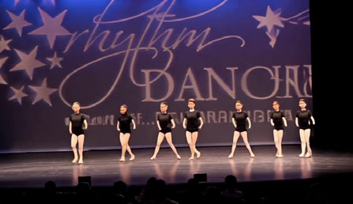
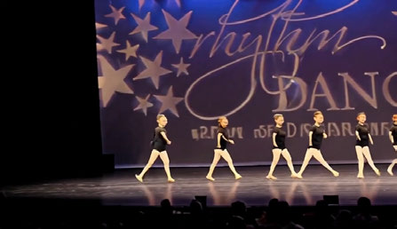
In the luminous glow of the stage, a troupe of dancers moves in harmonious synchrony against a backdrop that radiates an almost celestial aura.
The dancers keep moving naturally, staying synchronized.
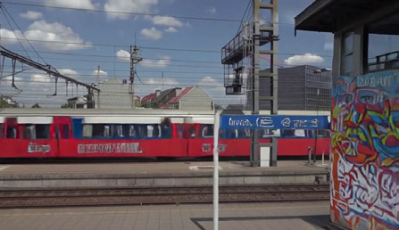
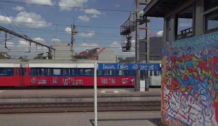
The video showcases a railway track environment on a bright day with partial cloud cover. Prominent features include multiple railway tracks running parallel, bordered by a platform on the right.
Independent motion of the subject and the camera is handled correctly.
In this dynamic video frame, two sleek military boats cut through the ocean with impressive speed and precision, their hulls throwing up sheets of white spray as they maneuver.
New views of the boats remain consistent under subject and camera motion.
Limitations
Where TANGO fails
Test-time adaptation can only find a better trajectory if one exists in the learned manifold of real videos. For topics far outside the training distribution, none may — and the failure mode could be subtle: the videos below look pleasant, while judged by a field-expert they are technically wrong from the first frame.
A macro visualization of a shimmering Time Crystal atomic lattice suspended in mid-air between two ultrasonic transducers by acoustic levitation. The crystal's internal geometric structure rhythmically pulsates and changes symmetry in a continuous temporal loop.
Exotic physics: the rendering is coherent and aesthetic, and bears no relation to the actual phenomenon.
A cryo-electron tomography simulation of a geometric DNA-origami nanobot suspended in a viscoelastic, non-Newtonian fluid. The nanobot uses mechanical arms to refold an amorphous, misfolded protein blob into a beta-sheet helix. As its arms move rapidly, the surrounding fluid undergoes localized shear-thickening accurately depicting low-Reynolds-number fluid dynamics.
Nanobiology: visually plausible throughout, and completely inaccurate as science.
Test-time adaptation is therefore complementary to scaling data and model capacity, not a substitute: scaling grows the space of valid trajectories; noise guidance helps finding a good one inside it.
Paper
Paper & citation
Test-Time Noise Guided Adaptation for Realistic Autoregressive Video Generation
Dimitrios Karageorgiou, Symeon Papadopoulos, Ioannis Kompatsiaris, Efstratios Gavves
European Conference on Computer Vision (ECCV) 2026 ·
arXiv:2607.15849
@inproceedings{karageorgiou2026tango,
title = {Test-Time Noise Guided Adaptation for Realistic Autoregressive Video Generation},
author = {Karageorgiou, Dimitrios and Papadopoulos, Symeon and Kompatsiaris, Ioannis and Gavves, Efstratios},
booktitle = {European Conference on Computer Vision (ECCV)},
year = {2026}
}This work was supported by the Horizon Europe projects ELIAS (grant no. 101120237) and ELLIOT (grant no. 101214398). The computational resources were granted with the support of GRNET.